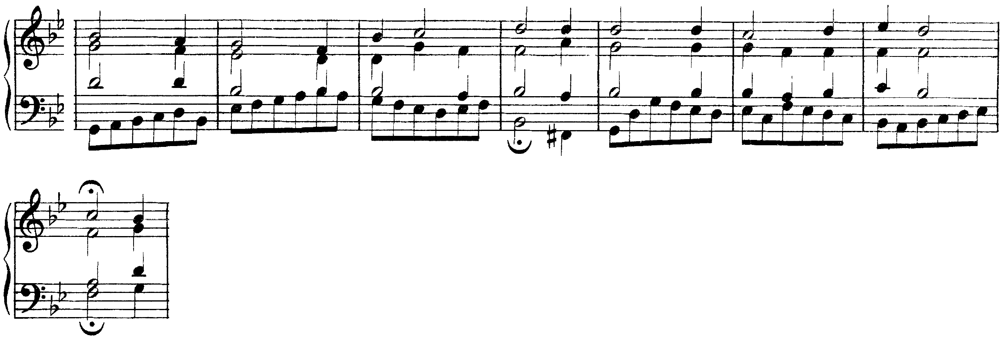

Il basso senza numeri dell’unità 5, con tre note in più: sul III, sul VI e sul VII grado l’accordo è in primo rivolto.
3° grado: accordo di 6ª (1° rivolto) in quasi tutti i casi.
Francesco Tissoni, Metodo elementare di Armonia, p. 18
Per il basso senza numeri Tissoni dà, grado per grado, l’accordo da porre sulla nota: per il III grado «accordo di 6ª (1° rivolto) in quasi tutti i casi»; per il VII grado «accordo di 6ª (1° rivolto) in quasi tutti i casi», e «il raddoppio della sensibile (VII grado) non è ammesso».
Basso sul I → I · sul III → I6
sul IV → IV · sul VI → IV6
sul V → V · sul VII → V6
Con I, IV e V la nota del basso è la fondamentale (I, IV, V) oppure la terza (III, VI, VII): ogni grado della scala, tranne il II, porta un solo accordo. Il II grado al basso arriva con la sesta e quarta, nell’unità 8.
Scrivere sopra il mi del basso l’accordo mi–sol–si, il III. In questa unità il mi del basso porta il I6: sopra ci vanno do e sol, e uno dei due si raddoppia.
B. 1 I–V6: il sol resta al contralto, il basso scende alla sensibile si, che sale al do della b. 2. B. 2 I–I6: lo stesso accordo; il basso sale do–mi e il soprano mi–sol. B. 3 IV–V con il moto contrario, e V–I alla b. 4. B. 5 IV6 con il do raddoppiato (la quinta), poi V. B. 6 I6 con il mi grave al basso, poi IV. Bb. 7–8 V–V6 sullo stesso accordo (il basso sale sol–si), poi la sensibile del basso sale al do; il soprano scende re–do.
Dimenticare che il basso fa parte dell’accordo. Nel I6 il mi è già al basso: se il soprano canta un altro mi, il basso è raddoppiato. Prima di scrivere le parti superiori, per ogni accordo di sesta si scrive a matita quale nota si raddoppia.

Il basso di questo corale procede quasi sempre in crome, per grado: le note degli accordi si alternano alle note di passaggio. Alla fine del primo verso (bb. 3–4) il basso fa fa–si♭: V–I. Alla b. 7 sale si♭–do–re–mi♭: sul re (terzo movimento) l’accordo è il I6. Alla b. 8 arriva al fa e la frase si ferma sul V: cadenza sospesa. Al secondo ascolto cantare sottovoce il basso della b. 7.
Nel corale gli accordi sono anche su altri gradi (il vi alla b. 1) e ci sono note di passaggio: nei bassi del corso un accordo dura una minima, e le note del basso sono tutte reali.
I → I, III → I6, IV → IV, V → V, VI → IV6, VII → V6.
Nei rivolti si raddoppia la fondamentale o la quinta. Il V6 sale al I. Sullo stesso accordo, cambio di posizione.
Lunedì la lezione 6: il dettato armonico con tonica, sottodominante e dominante. La lezione si chiude con il solfeggio: parlato, cantato e ritmico.
Compiti per la prossima volta
Realizza a quattro parti il basso di otto battute in la maggiore, senza numeri, con I, IV, V e i loro primi rivolti.
Prima la tabella: sotto ogni nota il grado del basso e l’accordo (III → I6, VI → IV6, VII → V6). Poi la posizione di partenza (soprano sul do♯5), i collegamenti, i raddoppi dei primi rivolti. Nella b. 7 il basso passa dal mi al sol♯ sullo stesso accordo.
Sul quaderno, a matita. La foto del lavoro finito va su Classroom. Nel Workbook: apri l’esercizio C1-U7-L5-11 ↗
Compiti per la prossima volta
n. 436 e n. 437 parlato · n. 438 e n. 439 cantato · n. 440 e n. 441 ritmico
Ogni pezzo a tempo, senza fermarti: il parlato a nomi, il cantato prendendo il primo suono dalla tastiera, il ritmico battendo la pulsazione.
Scrivi la melodia sul quaderno, in chiave di violino: otto battute in 2/4, do maggiore. Il primo suono è do. Prima il riferimento, poi tutto due volte, ogni coppia di battute due volte, il collegamento 1–4, 3–6 e 5–8, e tutto per controllare.
Il riferimento: accordo di tonica e primo suono
Il dettato · otto battute
Le sezioni (riferimento, tutto, le coppie, il collegamento) si ascoltano una per una e si ripetono quanto serve; le fasi fanno la procedura della classe, con gli annunci e le pause, da qualunque punto.
Sul quaderno scrivi in testa la sigla C1-D-U07-L5. Si corregge all’inizio della prossima lezione.
Compiti per la prossima volta
Continua la melodia fino a otto battute, in mi minore armonica, chiave di violino, metro 4/4: le prime due sono date. Muoviti soprattutto per grado congiunto, e dopo un salto di quarta o più torna indietro per grado; metti almeno due salti fra la quarta e la sesta; il settimo grado alzato (re♯) sale sempre alla tonica; chiudi sulla tonica, arrivandoci per grado. Ogni battuta piena, l’ultima con una nota sola. Poi cantala o suonala.
Sul quaderno, con la sigla C1-ME-U07-L5 in testa; la foto va su Classroom.
Sotto la melodia scrivi il basso, in chiave di basso: una nota per battuta, lunga quanto la battuta. La melodia è in mi♭ maggiore, metro 2/4. Per ogni battuta scegli fra la tonica (I: mi♭–sol–si♭) e la dominante (V: si♭–re–fa): guarda la nota sul tempo forte e le note più lunghe, e prendi l’accordo che le contiene; scrivi sotto il numero romano. La prima e l’ultima battuta sono sulla tonica, la penultima sulla dominante.
Sul quaderno, con la sigla C1-BS-U07-L5 in testa; la foto va su Classroom.
Scritto: Un basso senza numeri, in la maggiore (Workbook, esercizio C1-U7-L5-11), sul quaderno; la foto va su Classroom. Solfeggio dal quaderno di lettura: parlato n. 436, 437; cantato n. 438, 439; ritmico n. 440, 441 (a tempo, senza fermarsi). Dettato C1-D-U07-L5 dalla pagina della lezione (sezioni da ascoltare, o le fasi della procedura guidata), sul quaderno con la sigla. Melodia da continuare fino a otto battute (C1-ME-U07-L5). Basso sotto la melodia, una nota per battuta (C1-BS-U07-L5).
In classe
A nomi, a tempo, con la mano che batte. Chi si ferma riparte dalla battuta dopo.
Apri il n. 432 nel quaderno di lettura ↗ chiave di basso · 4/4
In classe
Si prende il tono dalla tastiera, si canta insieme; poi a gruppi.
Apri il n. 433 nel quaderno di lettura ↗ chiave di violino · 2/4 · sol maggiore
Apri il n. 434 nel quaderno di lettura ↗ chiave di violino · 2/4 · fa maggiore
In classe
Tutti insieme, battendo la pulsazione. Poi a file, due battute a testa.
In classe
Realizza a quattro parti il basso di otto battute in la maggiore, senza numeri, con I, IV, V e i loro primi rivolti.
Dieci minuti insieme sul quaderno, alla lavagna il primo punto; il resto è il compito per casa.